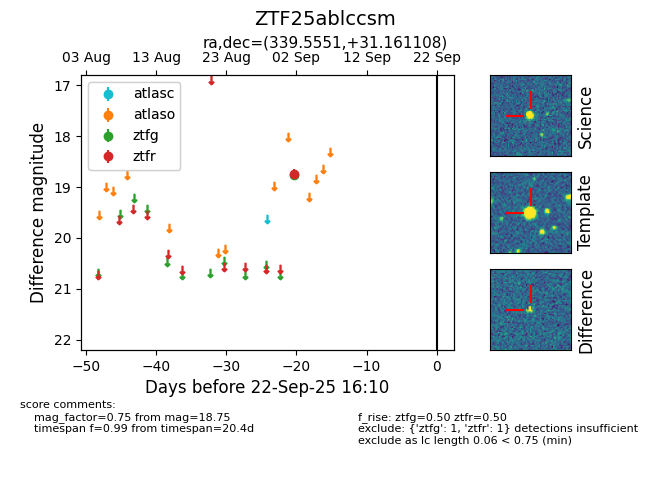

FINK: ZTF25ablccsm
Lasair: ZTF25ablccsm
ALeRCE: ZTF25ablccsm
ZTF25ablccsm (ztf,fink)
equatorial (ra, dec) = (339.5551,+31.16111)
galactic (l, b) = (92.0816,-23.61269)

last ztfg=18.76, ztfr=18.75
1 ztfg, 1 ztfr detections